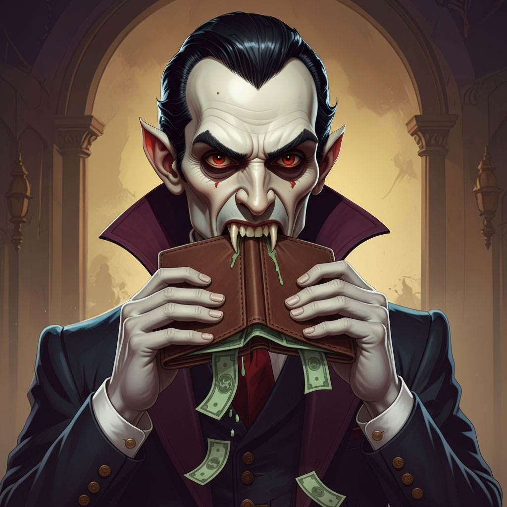

Beware Count Overdraft, a sly, shadowy vampire who lurks in the darkest corners of your finances. The parasite waits patiently until you spend just one cent more than you have in the account, then sinks his fangs in with a painful overdraft fee!
In the real world, Count Overdraft represents overdraft fees those sneaky charges banks apply when your balance goes negative. They can turn a small mistake into a financial nightmare, draining your wallet faster than you can say “insufficient funds.”
The Iron Banker says these fees are PREDATORY and MUST be avoided at all costs!
To defeat him, you must track your balance like a monster hunter watches the moon. Keep a buffer in your account, use banking alerts, and know exactly when your payments clear. Each smart move weakens Count Overdraft’s power and helps you stay in control. AND AVOID THE SWIPE!